| 日付 | 2017年8月6日（日） |
|---|---|
| メンバー | 家族（妻、長女・6歳、長男・4歳） |
| アクセス | 車 |
盆休み前に海に行って、川に行って、山に行って…と考えていたのだが、
梅雨明け以降、天候不順が続き全く遊びに行けない。
8月に入ってようやく晴れの日が訪れたので、早速、荒崎海岸に向かう。
そろそろ別の場所も開拓したいが、子供が小さいうちは
勝手知ったる荒崎海岸が無難だ。
駐車場オープンの30分前に荒崎海岸に到着する。
駐車場待ちの車の列ができているが、それほど多くはない。
早速日よけテントを設営する。
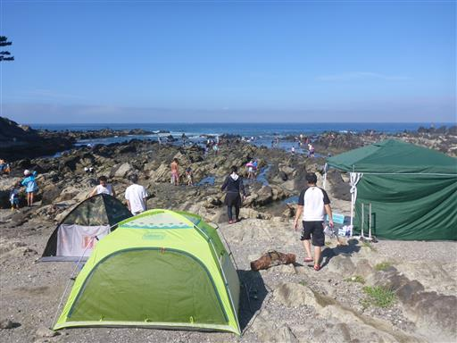
本日は波が高い。いつまで経っても消えない台風5号の影響だろう。
この台風は長寿台風歴代2位として記録されることになった。
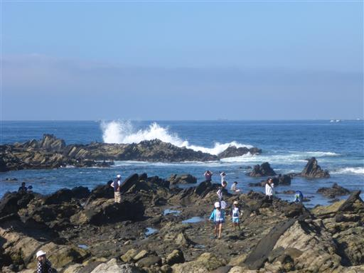
岩に囲まれた部分はあまり波が来ず、比較的安全だ。
干潮のため水の量は少なめで、残念ながら遊べる場所は少ない。
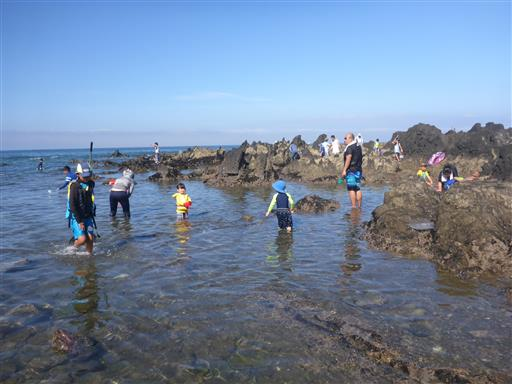
浮輪に入ってプカリプカリ。本当に気持ちよさそうだ。
水温は比較的高いので助かる。
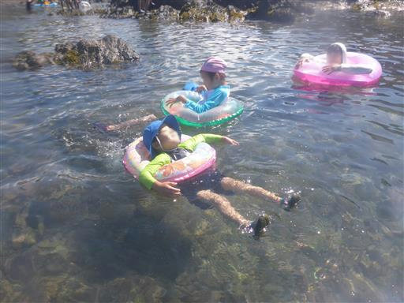
浮輪で浮かんだ後は生物を捕まえて遊ぶ。
今回はウニをゲット。このウニ、思った以上に速く移動することができる。
触手を伸ばして移動を始め、お気に入りの場所が見つかった後は動かなくなった。
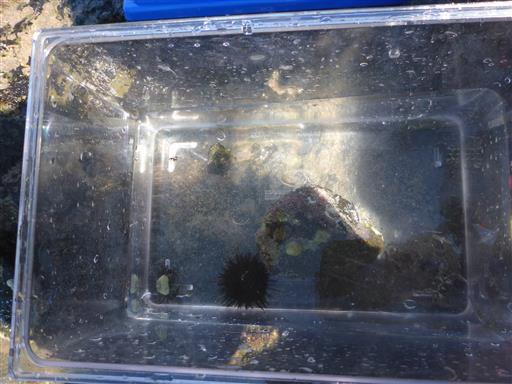
他にもヤドカリ、カニ、ハゼなどを捕まえて水槽とバケツに入れる。
息子は簡単に捕まえられるヤドカリを大量に捕ってきてバケツに入れている。
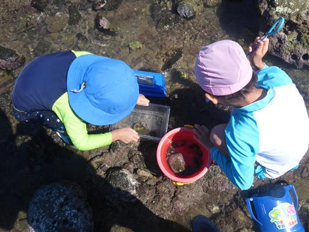
タイドプールで網を持って魚捕りに挑戦。
ナベカや大きなハゼを狙ったが、結局中くらいの大きさのハゼしか捕まえられなかった。
波のない、狭いタイドプールでも、魚を捕まえるのは容易ではない。
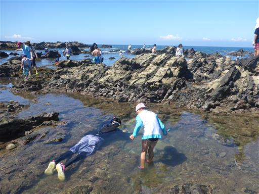
少し深いところにも行ってシュノーケリングをしてみる。
海が荒れているため結構な水流があり、体が岩にぶつかって痛い。
また、波が来ると泡で視界が遮られてしまう。
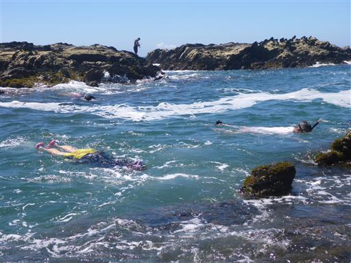
今回も水中写真に挑戦してみるが、全く上手く撮れない。魚が豊富にいたのだが…
キュウセンと思われる20～30cmの魚も見かけられた。
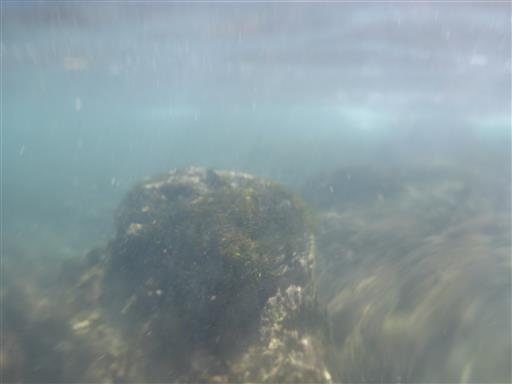
岩の外側は激しい波が打ち寄せている。
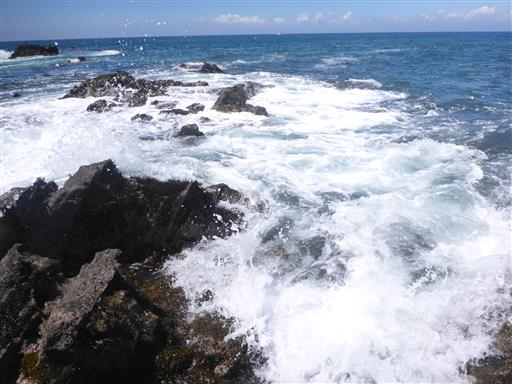
波が去った後。この様子では、この辺りではとてもシュノーケリングなどできない。
それでも沖の方でやっている人はいたが…
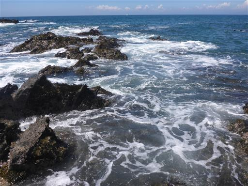
体が冷えたらタイドプールに入って体を温める。
太陽で暖められた水(?)は40℃くらいありそうだ。
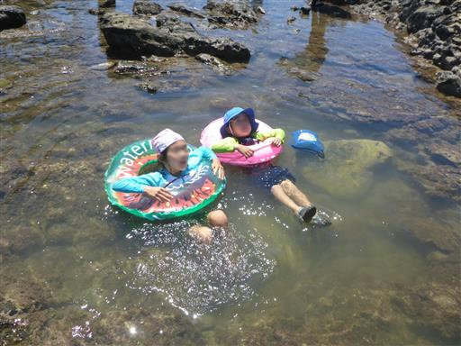
本日は快晴。遠くの入道雲が美しい。
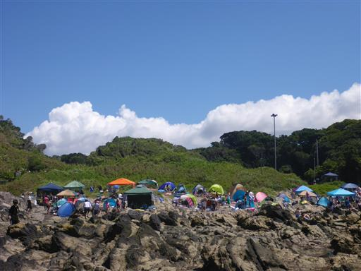
昼食をとったら子供たちと少し深いところ(1m程度)に行ってみる。
娘は今回新調したライフジャケットを身に着けて、水中眼鏡で海を覗いている。
しかし子供たちの要求で、浮輪とライフジャケットをしょっちゅう交換させられるので、かなり面倒…
ライフジャケットはシュノーケリングが楽しめる年齢になってきたら価値が増えそうだ。
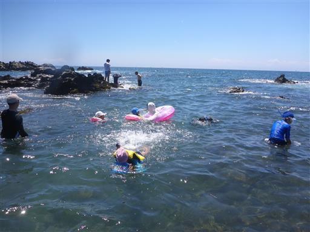
最後は少し波が来る場所で、波乗りをして遊ぶ。
波が高く、水もさほどきれいではなかったが、久々の海水浴を楽しめた。
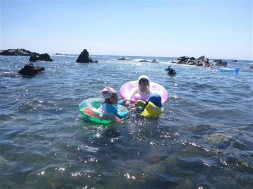